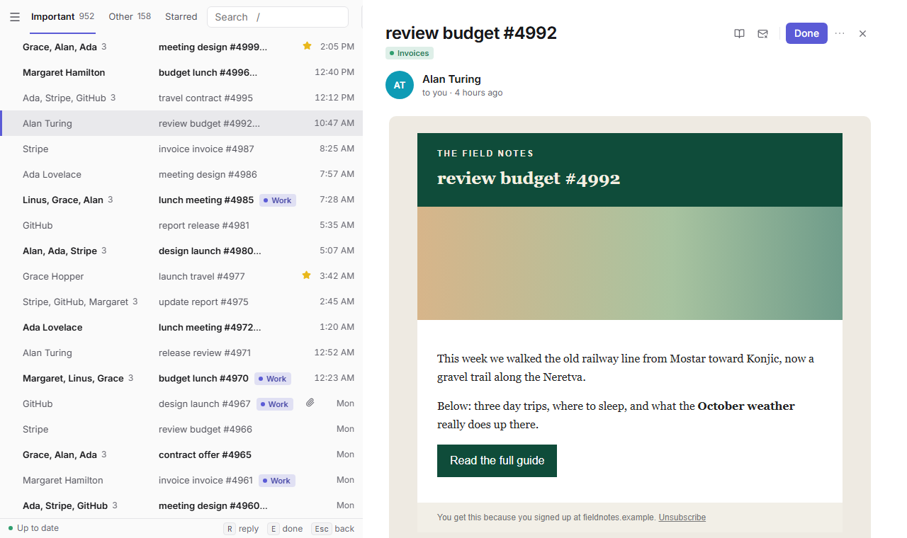
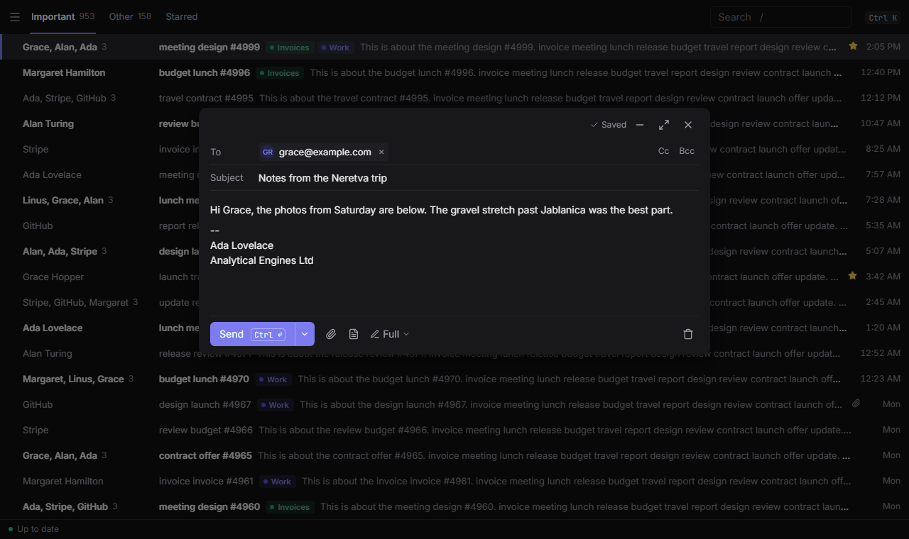

A fast, keyboard-first mail client for any IMAP account. Your mail lives on your computer, so lists, conversations and search never wait on the network.
Windows 10/11: the -setup.exe. Linux: the .AppImage, .deb
or .rpm. Free and open source (MIT). Beta: see the tester guide.


Everything you see comes from a database on your computer. Archive, star or send and it shows at once; it reaches the server after a 5-second undo window, or when you're back online.
Gmail-style keys and a command bar for every action. e archives, z undoes, Ctrl K finds the rest.
Fastmail, Gmail with its labels, your company's server. New mail arrives as it comes (IDLE), and the inbox fills headers first.
Important and Other, snooze, send later, "remind me if no reply", and fast full-text search with filters.
Snippets, signatures (HTML ones from Gmail or Outlook too), and a check for the attachment you mentioned but forgot.
Tray, notifications with Archive and Reply, start at login, mailto: links. It updates itself.
Tern talks to your mail servers and to nothing else, unless you choose to load a message's images or turn on sender logos. It has no account of its own, sends no analytics or crash reports, and this site has no tracking. Passwords stay in your system's keyring (Credential Manager or the Secret Service), never in a file. Mail is shown in a sandbox with no scripts, and remote images are blocked until you load them.
Updates are checked against GitHub's release list and are signed, so a tampered download is refused.
| j k | next, previous |
| e | archive |
| z | undo |
| r | reply |
| c | compose |
| h | snooze |
| / | search |
| Ctrl K | every command |